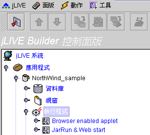
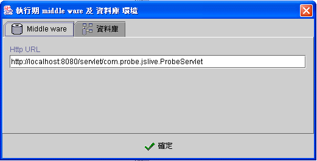
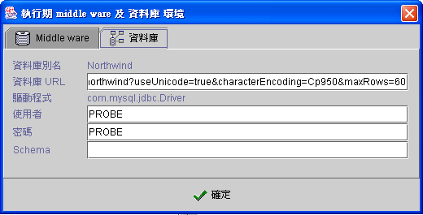
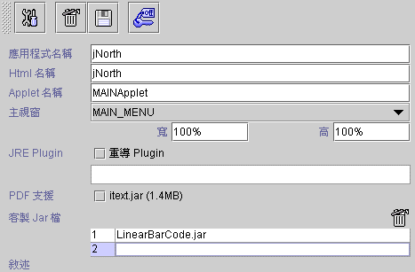
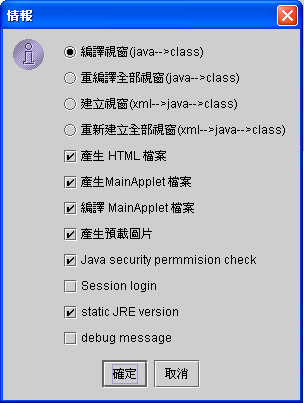

|

|
 |
Chapter 8
Make executable program |
 |
8. 製作執行程式
(make executable program)
新增執行應用程式 (create new executable program)
設定執行期的 jLIVE™ middle ware 及資料庫 (runtime middle ware and database)
製作瀏覽器執行程式
(build browser enabled HTML)
製作 Java™ 可獨立執行檔 (build standalone executable JAR)
製作 Java web start ™ 啟動執行(web start JNLP)
授權式安全控管設定 (authorized
security control)
jLIVE Builder™
所開發的網際網路應用程式，可以以下列三種方式執行：
-
由瀏覽器啟動執行(browser enabled HTML)
-
Java™
可執行檔獨立執行 (standalone executable JAR)
-
以
Java web start ™ 啟動執行(web start JNLP)
不論執行的方式為何，在網際網路上啟動執行後，應用程式皆以多層式 的架構 (n-tiers) 運作。由瀏覽器啟動執行(browser enabled
HTML)，在建立時，系統會加入啟動程式的 HTML 及 內嵌的 Applet ； Java™ 可執行檔獨立執行 (standalone executable
JAR)，系統會將所有 Java™ class 檔壓縮成可執行的 Java™ JAR 檔；以 Java web start ™ 啟動執行(web start JNLP)，除了建立 可執行的 Java™ JAR 檔外，會加入 Java™ JNLP 檔。

新增執行應用程式 (create new executable program)
在選取執行程式後，除了已內建的
Browser enabled applet 及 JarRun & Web start 外，按下 新增
applet_run 或
新增 jar_run，設計師可以無限制新增執行程式。按使用者的需求可以有各種不同的方式執行同一版程式，例如：以不同的
HTML 啟動不同的啟動畫面；連結設計期或正式執行期的資料庫系統；連結不同的 jLIVE™ middle ware。 新增
applet_run 或
新增 jar_run，設計師可以無限制新增執行程式。按使用者的需求可以有各種不同的方式執行同一版程式，例如：以不同的
HTML 啟動不同的啟動畫面；連結設計期或正式執行期的資料庫系統；連結不同的 jLIVE™ middle ware。
設定執行期的 jLIVE™ middle ware 及資料庫 (runtime middle ware and database)
在按下建立執行程式時，系統會詢問設計師在此應用程式，所使用的 jLIVE™
middle ware 及 所連結的資料庫與控制面版設計時的節點設定有何不同。系統會將目前控制面版節點的 jLIVE™ middle ware
設定及使用異地多應用伺服器 (2nd MW_HTTP) 的 Http URL 列示在 Middle ware
的標籤頁，設計師必須檢查或需更改為此應用程式所要連結的 jLIVE™ middle ware
。同樣的，系統會將目前控制面版節點的一個或多個資料庫系統，按資料庫別名列示於資料庫標籤頁中，設計師必須檢查或需更改為此應用程式所要連結資料庫
。按下確定鍵後，系統會記錄設定值 。


▲Top
8.1
製作瀏覽器執行程式 (build browser enabled HTML)
建立執行程式 (build program)
系統將會自動產生一個 HTML 檔，內含一個 Java™ applet 。應用程式的使用者可以用瀏覽器執行此應用程式。所有設計的視窗及報表只需安裝於應用伺服器
(application server)，使用者執行到該程式模組時才由應用伺服器送出，且只要該模組沒有任何更新版本，使用者端 (client)
即以本機上的模組直接執行不用再下載。此一機制不但執行效率高而且程式維護安裝容易。

-
建立 (build applet_run program )
(
建立執行程式 ) ：建立一個HTML，在 HTML 嵌入embedded Java™
applet 小程式。
-
儲存 (save
modified applet settings)  ( 儲存修訂的設定 ) ：所有更新必須存檔。
( 儲存修訂的設定 ) ：所有更新必須存檔。
-
刪除 (delete)
 (刪除)：刪除此模組。 (刪除)：刪除此模組。
-
安全 (security
control)
( 安全控管 ) ：jLIVE Builder™ 系統預設的安全登入機制。
-
應用程式名稱 (app name)：一個專案應用程式可產生多個 HTML ，其中可設定不同的主視窗及權限，按使用者的需求登入不同的 HTML。
-
Html
名稱 (html name)：HTML 名稱，所產生的 HTML
除了 APPLET
標籤 (html tag) 的內容外，設計者可按需求作進一步的編輯。
-
Applet 名稱 (applet name)：系統會產生預設的
Java™
applet
原始資料檔 (source code)，設計者可按需求作進一步的編輯。
-
主視窗 (main
panel)：應用程式執行的第一個視窗畫面，如果該視窗的屬性是主視窗，則視窗畫面將會崁入瀏覽器的畫面，否則以內部框架的型態呈現。
-
重導 Plugin
(redirect plug in)：此段 URL 敘述將內崁入 HTML
中，當使用者端 (client) 沒有安裝 JRE (Java Runtime
Environment) 時瀏覽器將據此下載 JRE。此項空白則以預設 Sun 的 Web
為下載區。
-
PDF 支援 (PDF
supported)：jLIVE
Builder™
以 iText 輸出 PDF 檔 ，由於 iText.jar 檔案大小為 1.45 MB，使用者在第一次執行程式時，系統會將 iText.jar 傳送並
Cache 在使用者端 (client)，所以如果使用 PDF 時，使用者第一次執行的載入時間會相對較長。預設不支援 PDF，使用者在報表預覽的 PDF
功能鍵將會是失效狀態 (disabled)，設計師以 Report2Pdf() 啟動 PDF 的運算式將回傳 0 。核選 (check) 支援 PDF，製作
(build) 應用程式時，系統將會將 iText.jar 置放於應用程式 class 目錄下，並在所應用程式啟動的 HTML 的 codebase 加入
iText.jar。
-
客製
Jar 檔 (custom jar file)：jLIVE™ 允許設計者呼叫外部
class，或自行開發的模組 (third party jar)，必須在此填入所參照的 class
檔，並將該 jar 檔置放於應用程式 class
目錄下，在程式啟動時 jLIVE™
會一併傳送給使用端 (client)。
-
敘述 (description)：設計者對於應用程式相關說明。
▲Top
建立執行程式 (build program)

-
編譯視窗
(Java --> class) ：只編譯
(compile) 更新的 Java™ source file ( *.java
日期晚於 *.class 的檔案)。
-
重編譯全部視窗
(Java --> class) ：重新編譯
(compile) 所有的 Java™ source file。
-
建立視窗
(XML --> Java --> class) ：由視窗的
XML 檔建立 Java™ source file (*.java)
， 再將其編譯 (compile) 為 Java class (*.class)，只建立更新的
XML 檔 ( *.xml 日期晚於 *.java
的檔案)。
-
重新建立全部視窗
(XML --> Java --> class)：由視窗的
XML 檔建立所有 Java™ source file (*.java)
， 再將其編譯 (compile) 為 Java™ class (*.class)。
-
產生
HTML 檔案 (generate HTML file)：產生由瀏灠器啟動程式的
HTML 檔。
-
產生
MainApplet 檔案 (generate MainApplet)：產生內嵌於
HTML 檔的 Java applet source file。
-
編譯
MainApplet 檔案 (compile MainApplet)：編譯
(compile) 內嵌於 HTML 檔的 Java applet source
file。
-
產生預載圖片
(generate pre-load images)：將應用程式
class/preloadimage
目錄下的圖片檔壓縮成 jimage.jar
並將其置放於應用程式
class 目錄下。
-
Java security permission check ： 由瀏覽器 (browser)
或 Java™ web start 啟動的應用程式，執行時會受 JVM security manager
的安全控管，除非經過授權，不允許系統使用客戶端的資源，例如：存取客戶端的檔案資料。jLIVE Builder™
的應用程式，預設在啟動後會檢測客戶端存取客戶端的檔案資料權限，並出現授權詢問視窗。如果應用系統不需存取使用者端 (client) 資源，設計師可以不核取
(uncheck) 此選項，應用程式啟動時將不會出現授權詢問視窗。
-
Session login：設計師開發多個 jLIVE Builder™
應用程式供使用者應用時，使用者在登入第一個應用程式時，系統會詢問使用者名稱及密碼，如果設計師核取
Session login
，當使用者以同一瀏覽器登入其他應用程式時，系統將以相同的使用者名稱及密碼，自動登入，有任何錯誤時會再次出現登入視窗。
-
Static
JRE Version ： 核取 (checked)
static JRE version，Applet 將只使用此 Java™ 的特別版本。如果尚未安裝，可能的話，此版本將會自動下載。否則，使用者將會被導引至手動下載網頁。請在自動下載過程中參閱 http://java.sun.com/products/plugin 網站以取得詳細資訊，並至檔案結尾 (EOL) 取得所有Java 發行版本的資訊。不核取
(unchecked) static JRE version ，如果沒有安裝此版本，可能的話，Java 1.4 系列目前的預設下載會自動下載 。否則，使用者將會被導引至手動下載網頁。
-
Debug message：供設計師除錯及檢視內部作業時程，核取
Debug message
在瀏覽器的 Java™ consol 或以 Jar 啟動的 DOS
視窗，系統會輸出各項作業的時間及程序，設計師可以據以了解各項作業在與應用伺服器溝通所耗時間。程式開發完成時，務必移除 (unckeck) 此選項。
▲Top
Copyright © 2001~
2004 Probe Technology . All Rights Reserved.
Questions, comments,
and suggestions to Service@probe.com.tw
|